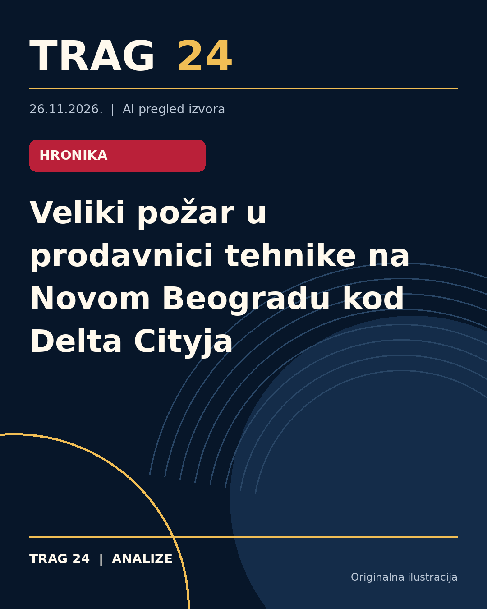

Veliki požar u prodavnici tehnike na Novom Beogradu kod Delta Cityja

ŠTA SE DOGODILO
Jutros je izbio veliki požar u prodavnici bele tehnike u Ulici Agostina Neta 3, na Novom Beogradu, preko puta tržnog centra Delta City. Požar je brzo zahvatio čitav objekat, a gašenje otežava jak vetar i neuobičajeno vreme sa kišom i nevremenom.
HRONOLOGIJA
Požar je prijavljen ujutru, a na lice mesta upućeno je više vatrogasnih vozila, uključujući i vozilo sa kranom za gašenje sa visine. Policija je obustavila saobraćaj u delu ulice Jurija Gagarina u smeru ka centru grada, te su linije gradskog prevoza preusmerene na alternativne trase. Intervencija vatrogasaca i policije i dalje traje, a očekuje se da će gašenje potrajati.
ŠTA NAVODE IZVORI
Prema nezvaničnim informacijama oba izvora, nema povređenih lica prilikom požara. Vatra se, uprkos jakom vetru i kiši, brzo proširila po objektu. Policija kontroliše saobraćaj u neposrednoj blizini mesta požara. Objekat je veliki prodajni prostor za belu tehniku i kućne aparate u bloku 70a Novog Beograda.
ŠTA JE POTVRĐENO
Potvrđeno je da je u pitanju prodavnica tehnike u Ulici Agostina Neta 3 na Novom Beogradu, da je objekat u potpunosti zahvaćen plamenom i da je saobraćaj u delu Jurija Gagarina obustavljen. Na terenu su vatrogasci i policija, kao i vozilo sa kranom za gašenje sa visine. Za sada nije prijavljeno ni jedno povređeno lice.
ŠTA NIJE POTVRĐENO
Uzrok izbijanja požara za sada nije poznat, a informacije o eventualnim materijalnim štetama ili daljim posledicama nisu dostupne. Takođe, zvanične informacije o trajanju i uspehu gašenja nisu date.
ŠTA OSTАJE OTVORENO: Ostaje nejasno šta je dovelo do izbijanja požara i da li će uslediti dalje istrage. Takođe je nepoznato koliko će dugo trajati intervencija vatrogasaca i kada će saobraćaj biti normalizovan. Nije saopšteno da li će biti potrebna dodatna bezbednosna ili sanaciona mera u okolini objekta.
Izvori
- https://www.kurir.rs/crna-hronika/10173221/pozar-u-prodavnici-tehnike-u-bloku-70a-u-novom-beogradu
- https://www.blic.rs/vesti/beograd/ogroman-pozar-prekoputa-trznog-centra-na-novom-beogradu-vatra-i-dim-kuljaju-iz/dpcjbhg
Ova analiza je pripremljena uz pomoć veštačke inteligencije na osnovu javno dostupnih izvora. Navodi izvora nisu nužno nezavisno potvrđeni.